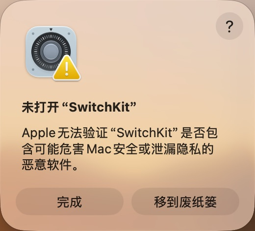
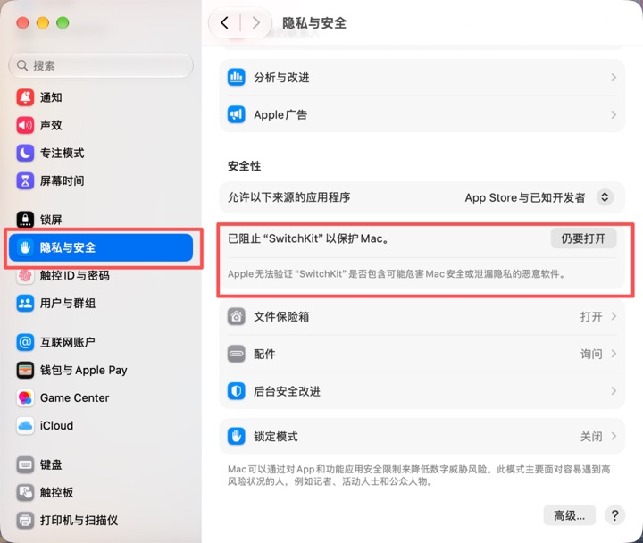
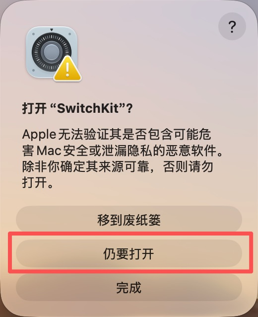
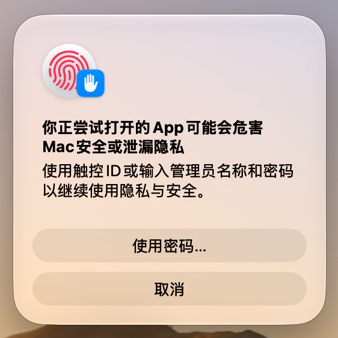

SwitchKit 是一款 macOS 专属的菜单栏快捷开关 + 系统资源释放工具。免登录即可一键深色模式、阻止睡眠、截屏录屏、清理扫描；登录后解锁释放内存、蓝牙管理与多平台模型余额。常驻菜单栏，体积极小。
外观三态（浅 / 深 / 自动）、隐藏桌面图标、阻止睡眠、清空废纸篓、隐藏 Dock、显示隐藏文件、屏幕清洁、台前调度（macOS 13+）。
「自动」由 macOS 按日出/日落切换，不读定位；一键拉起截屏录屏工具栏（静态截图与屏幕录制都在内，零新增权限）。自定义全局快捷键需登录后设置。
锁定屏幕、清空剪贴板、启动屏幕保护、一键关闭所有应用（优雅退出，自动跳过自身与 Finder）。
列出已配对设备，一键连接 / 断开。走系统 IOBluetooth 框架，无第三方依赖。
释放内存（purge）、刷新 DNS；「清理无用文件」逐项勾选、风险分级，删除前先移入废纸篓可恢复，另有占用排行、大文件扫描与定时清理。
DeepSeek、Kimi、智谱 GLM、阶跃星辰、Novita、OpenRouter、302.AI、AiHubMix 及中转站，多账号混排、60 秒自动刷新。
按 App 聚合缓存 / 容器 / 支持文件的占用排行，扫描大文件与疑似重复，快速定位磁盘空间杀手。扫描只读，执行清理需登录。
一键注册 LaunchAgent，自带单实例保护，不会出现双托盘图标。
基于 tauri-plugin-updater，面板「检查更新」一键下载安装并重启，无需手动来回。
清理仅限白名单且在主目录内，预览 + 二次确认，删除前先移入废纸篓可恢复；root 操作凭据不落盘、不进日志；默认不联网、不上报。
日常高频、零成本的功能完全免费；专业级操作需登录账号后使用。登录入口在应用「设置 → 账号」。
装好即用，覆盖绝大多数日常场景
面向重度用户的专业能力与效率增强
无 Dock 图标，常驻菜单栏。点击图标即可展开，所有状态实时反映系统真值；底栏点「排序」还能拖动开关卡片自定义位置，顺序自动记住。
三步完成。分发包为 ad-hoc 签名、未公证（项目不申请 Developer ID / 不做 Apple 公证）；每个新包、每次在线更新都要重新放行并重新授权一次，详见下方说明。
brew install blueutil（可选）| 权限 | 用途 |
|---|---|
| 自动化 (Finder) | 清空废纸篓、废纸篓计数 |
| 自动化 (System Events) | 深色模式、屏幕清洁、关闭所有应用 |
| 完全磁盘访问 | 清理 Safari 等受保护缓存（需重启 App 生效） |
| 文件和文件夹 | 大文件扫描、应用占用统计 |
| 蓝牙 | 列出 / 连接蓝牙设备 |
| 管理员密码 | 释放内存、刷新 DNS（登录后可用，凭据不落盘） |
⚠️ 每次更新后需重新授权：ad-hoc 签名每次换包都会产生新签名，macOS 把它当作新 App，之前的隐私授权会静默失效——系统设置里的开关仍显示「开」，而且通常不会重新弹窗。退出 App 后在终端执行下面命令，重开 App 再逐项触发功能并允许弹窗：
tccutil reset All com.switchkit.app
App 面板顶部会自动检测换包并提示，提供一键复制命令、打开系统设置与权限自检入口。个别系统级权限可能需要重启 macOS 后才重新弹窗。
/Applications（「应用程序」文件夹）。不要在压缩包内直接双击运行。启动后没有 Dock 图标，点菜单栏上的 SwitchKit 图标即可展开面板。若下方步骤仍提示「已损坏，无法打开」，在终端执行下面命令移除隔离属性后重试：
xattr -dr com.apple.quarantine /Applications/SwitchKit.app
熟悉终端的用户也可全程用命令行完成下载、解压与首次放行：
# 1. 下载（以 universal 为例，按需替换版本号与架构） curl -LO https://github.com/samjoeyang/unoSwitchKit/releases/download/v0.4.15/SwitchKit-0.4.15-universal.zip # 2. 解压（分卷先合并：zip -s 0 X.zip --out full.zip && unzip full.zip） unzip SwitchKit-0.4.15-universal.zip -d /tmp/sk mv /tmp/sk/SwitchKit.app /Applications/ # 3. 移除隔离属性并打开（绕过 Gatekeeper 拦截） xattr -dr com.apple.quarantine /Applications/SwitchKit.app open /Applications/SwitchKit.app
launchctl unload ~/Library/LaunchAgents/com.switchkit.app.plist 2>/dev/null rm -f ~/Library/LaunchAgents/com.switchkit.app.plist rm -rf /Applications/SwitchKit.app rm -rf ~/Library/Application\ Support/com.switchkit.app




根据你的 Mac 芯片选择对应版本。不确定是哪种芯片？选「通用版」最稳妥，Apple 芯片与 Intel 都支持。
分发包为 ad-hoc 签名、未公证，首次打开会弹出安全警告，按安装方式中的 4 步放行即可；每次换包都要重做，并需按说明重新授权系统权限。
版本 v0.4.15 · 系统要求 macOS 12.7.6+
遇到问题、提建议、看更新动态，来 Telegram 群组找我们。扫码或搜索 @UNOSWITCHKIT 即可加入。
SwitchKit 免费软件，无广告、不收集数据。若它让你的 Mac 更好用，欢迎赞助，支持持续开发。
每一份支持都会用于：服务器与证书费用、新功能研发、以及……作者的咖啡续杯。🙏